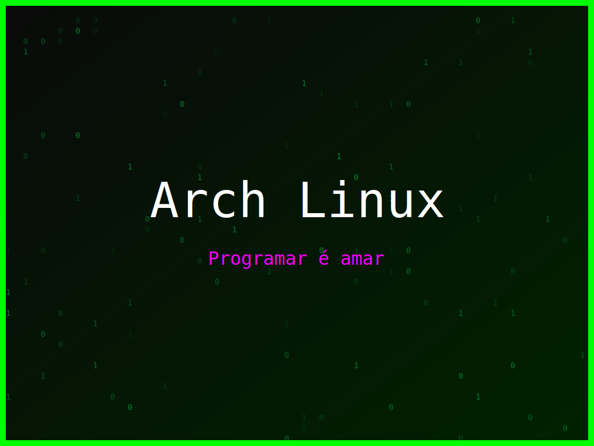

<section class="post-content">


    <div class="details-container">
       
        
        <ul class="details-list">
            <li><strong>Autor:</strong> piolinux</li>
            <li><strong>Descrição:</strong> Arte digital Arch Linux que compara a programação ao amor, com cores vibrantes.</li>
            <li><strong>Distro:</strong> Arch Linux</li>
            <li><strong>Frases:</strong> Programar é amar, Kernel panic, Consoles são amigos</li>
            <li><strong>Tags:</strong> matrix, colorido</li>
        </ul>
        <a href="../galeria.html">Voltar para a galeria</a>||
        <a href="../wallpaper30.svg" download="wallpaper-arch-linux-o-codigo-e-o-amor.svg">Baixar Wallpaper</a>
    </div>


</section>
